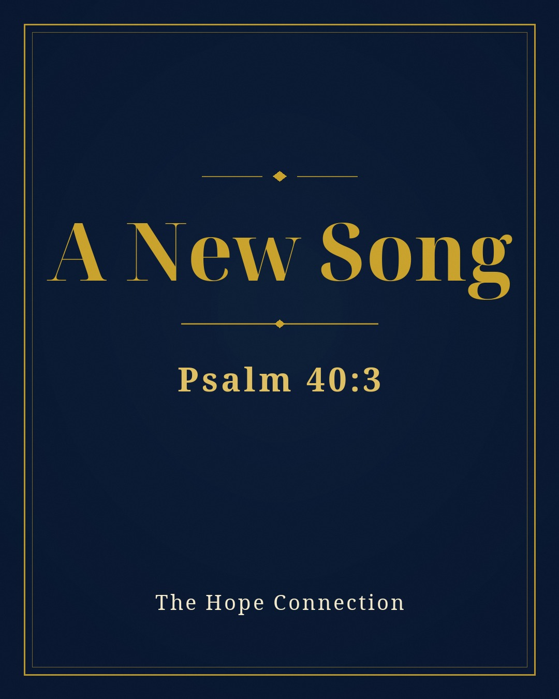

He put a new song in my mouth, a song of praise to our God. Many will see and fear, and put their trust in the LORD.
Psalm 40:3 (ESV)
From Chapter Ten of Lewis's book, “Hope Met Me Where I Was.”
Let me tell you something I do not say lightly. I never dreamed I would share my story the way I do now. Before this, the only place I ever told it was in the rooms of AA and NA. I always thought I would speak to large crowds, preaching the gospel. And you want to know the truth? I'm scared to death to speak for even five minutes — and I sure don't compare to what you'd call a dynamic, fire-and-brimstone kind of preaching. Don't get me wrong, there's nothing wrong with that. When the Spirit moves, He moves in many different ways to accomplish His purpose.
I say all of that to say this: Glory to God — He has put a new song in my heart. David said it before I ever lived it: “He put a new song in my mouth, a song of praise to our God” (Psalm 40:3) — and notice, that is the same psalm where God drew him up “out of the pit of destruction” (Psalm 40:2). The pit and the song live in the same chapter. That is not an accident. We all have different gifts (Romans 12:6), and when God is in the details, miracles happen and lives are changed. As a man who was broken time and time again, I have learned what it means to be available — whether I'm dynamic or just a mellow, low-toned country boy from Reidsville, NC, who never knew who he really was. I was blind back then. But that country boy learned some valuable lessons from that point until today, and that person back then is now a New Creation — a new man, because of Jesus: “If anyone is in Christ, he is a new creation. The old has passed away; behold, the new has come” (2 Corinthians 5:17).
So now I tell my story when I can, where I can, to anyone I can. When the Lord changes your life, you can't help but tell your story. And always remember this: “Christ Proclaimed.” “Jesus is Lord” (Romans 10:9). That is the Gospel — the best NEWS anyone could ever receive.
Here is the insight it took me sixty years to see: Scripture never once asked God's witnesses to be impressive. When the religious leaders pressed the man born blind — demanding he explain and defend what Jesus had done — the man had no sermon and no answers. All he had was a story: “One thing I do know, that though I was blind, now I see” (John 9:25). That was enough then, and it is enough now. God did not wait for me to become dynamic. He waited for me to become available. The size of the crowd was never the point, and the polish of the messenger was never the power. The power is the story itself — because the story is about Him.
Reflect — Questions & Answers
1. Do I have to be a polished, confident speaker for God to use my story? No. “Scripture never once asked God's witnesses to be impressive.” The man born blind had no sermon and no answers — all he had was a story: “One thing I do know, that though I was blind, now I see” (John 9:25).
2. What is God actually waiting on, then? Availability. “God did not wait for me to become dynamic. He waited for me to become available. The size of the crowd was never the point, and the polish of the messenger was never the power. The power is the story itself — because the story is about Him.”
From the book
This reflection is woven into Chapter Ten of “Hope Met Me Where I Was” by Lewis Fuller.